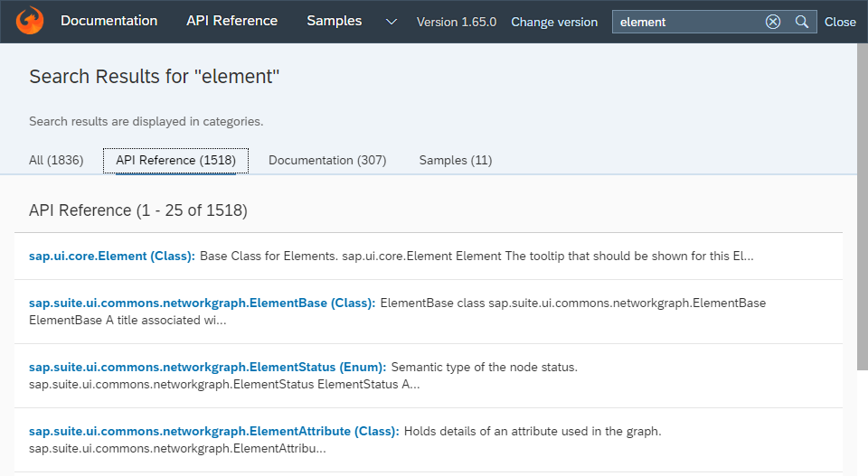

What's New in SAPUI5 1.65
What's New in SAPUI5 1.65
New Features
|
New Theme Available for SAP Fiori 3 User Experience The
SAP Fiori 3 user
experience
is now supported. A new theme with SAP
Quartz
Light as the default
appearance
(theme
ID For more information, see Supported Combinations of Themes and Libraries. |
New Controls
|
The new For more information, see sap.f.GridContainer, the API Reference, and the Sample. |
Improved Features
|
SAPUI5 OData V4 Model The new version of the SAPUI5 OData V4 model introduces the following features:
Restriction
Due to the limited feature scope of this
version of the SAPUI5 OData V4 model, check that all required features are in place
before developing applications. Check the detailed documentation
of the features, as certain parts of a feature may be missing.
While we aim to be compatible with existing controls, some
controls might not work due to small incompatibilities compared
to For more information, see OData V4 Model, the API Reference, and the Samples. |
|
Spreadsheet Export Currency values and
numbers, that cannot be represented in the spreadsheet file in
the format as defined by the IEEE (Institute of
Electrical and Electronics Engineers) in
standard 754-2008 (standard for floating-point arithmetic)
because they are too large, now automatically use the
|
|
Test Automation The setup for Karma-based test automation has been improved
significantly: The corresponding plugin has been completely
reworked and renamed to For more information, see Installing Karma for Automated Testing and karma-ui5 on Github. |
Improved Controls
|
With the new |
|
|
|
The control is no longer experimental. To comply with the latest UX guidelines, its child controls have a predefined semantic order and are displayed in their cozy content density mode with dark visual design. For more information, see the API Reference and the Sample. |
|
We have improved the |
|
For more information, see the API Reference and the Samples. |
|
We have enabled the control to move to the overflow area of
|
The
control now supports the
|
|
We have changed the |
|
For more information, see Cards, the API Reference, and the Samples. |
|
|
SAP Fiori Elements
|
List Report You can pass the variant ID as a URL parameter while navigating from an analytical list page application to the list report and vice versa. For more information, see Managing Variants. Analytical List Page If there are measures with negative values, you can now enable the visual filter donut chart type to display an overlay message. For more information, see Visual Filter Setup. |
Documentation and Training
| New openSAP Course: Evolved Web Apps with SAPUI5 We have launched a new openSAP course on how to develop professional web apps with UI5. Key highlights:
The key concepts shown in this course apply to both, SAPUI5 and OpenUI5. The course is aimed at intermediate to advanced developers but is also suitable for ambitious UI5 beginners. Participation is free of charge. For more information and to enroll, see https://open.sap.com/courses/ui52.  |
Demo Kit Improvements
|
Demo Kit Search We have improved the global search capabilities in the Demo Kit app by migrating to a client-side search based on Elasticlunr.js.  |
In this section:
Parent topic: Previous Versions
Previous:
Next:
Related information
- What's New in SAPUI5 1.86
- What's New in SAPUI5 1.85
- What's New in SAPUI5 1.84
- What's New in SAPUI5 1.82
- What's New in SAPUI5 1.81
- What's New in SAPUI5 1.80
- What's New in SAPUI5 1.79
- What's New in SAPUI5 1.78
- What's New in SAPUI5 1.77
- What's New in SAPUI5 1.76
- What's New in SAPUI5 1.75
- What's New in SAPUI5 1.74
- What's New in SAPUI5 1.73
- What's New in SAPUI5 1.72
- What's New in SAPUI5 1.71
- What's New in SAPUI5 1.70
- What's New in SAPUI5 1.69
- What's New in SAPUI5 1.68
- What's New in SAPUI5 1.67
- What's New in SAPUI5 1.66
- What's New in SAPUI5 1.64
- What's New in SAPUI5 1.63
- What's New in SAPUI5 1.62
- What's New in SAPUI5 1.61
- What's New in SAPUI5 1.60
- What's New in SAPUI5 1.58
- What's New in SAPUI5 1.56
- What's New in SAPUI5 1.54
- What's New in SAPUI5 1.52
- What's New in SAPUI5 1.50
- What's New in SAPUI5 1.48
- What's New in SAPUI5 1.46
- What's New in SAPUI5 1.44
- What's New in SAPUI5 1.42
- What's New in SAPUI5 1.40
- What's New in SAPUI5 1.38